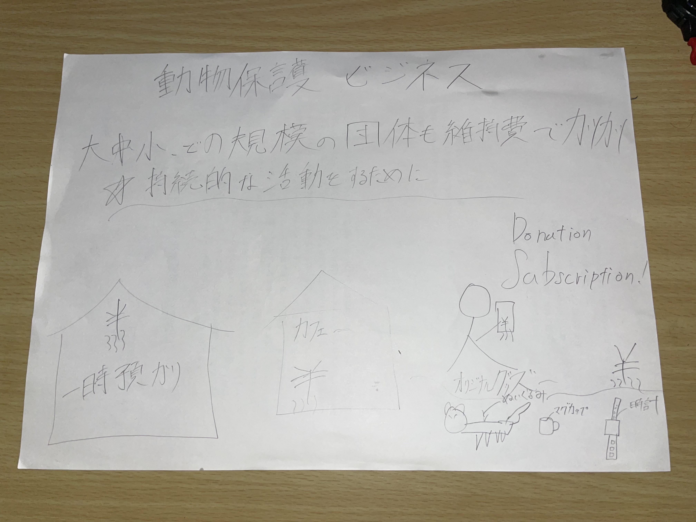
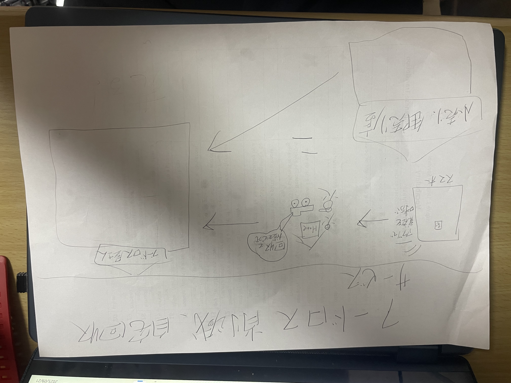
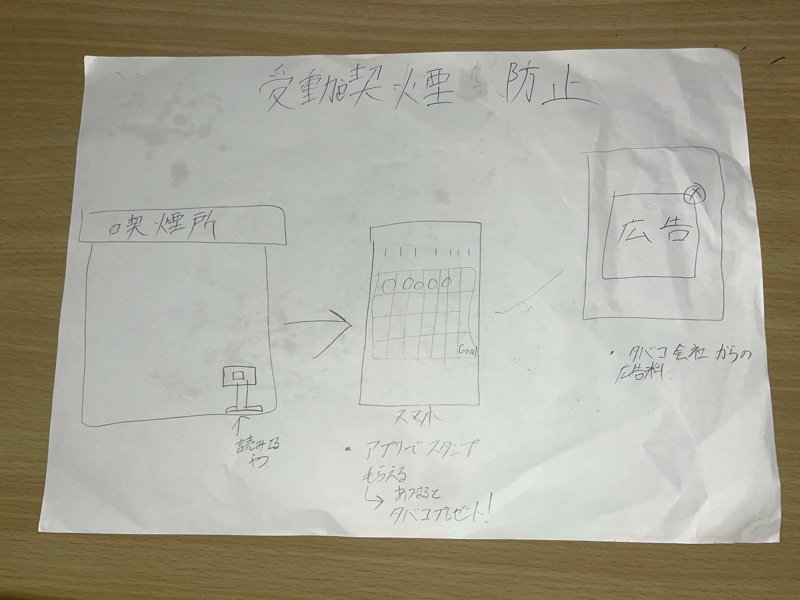

持続的な動物保護のためのビジネス

人手不足や、限られた収入源から,かつかつの状況にある動物保護活動。
持続的活動を実現するためのビジネスプラン。
活動内容
・保護した動物のカフェ
・オリジナルグッズの販売
・預かりサービス
・オンラインでの寄付のサブスク
・SNSやメディアを通した収益活動
フードロス削減のための自宅回収サービス

令和5年度の推計で、日本の食品ロス総量は約464万トン。
それらを減らすため、レストラン、家庭、小売店に出向き、食品を回収する。
ユーザーはアプリで、回収物の内容を送信し、それを安価で回収する。
無料回収よりもユーザーが増えることが見込まれる。
そのアプリでのオンライン販売や、店舗で売る。
受動喫煙防止ビジネス

喫煙所にバーコードをえ設置。読み取りでスタンプが溜まる。
ゴールに達すると提携企業のタバコをプレゼント。
アプリ画面に提携企業の商品広告を表示して、広告料を得る
人工の少ない箇所への喫煙所の設置。
喫煙者が体を動かす理由になる。